Driven by Principle
A seasoned management team driving strategic growth and sustainable development in the mining industry.
A competent team with direct operational involvement
Siyanda Resources is led by a competent management team with extensive mining experience and direct involvement in operations.
Ingrained within our DNA is:
- Knowledgeable operational expertise
- Continuous improvement to be the lowest cost producers
- The ability to be mining disruptors, as evidenced by our Value Delivery
- Siyanda’s management team operates from its offices in Rosebank, overseeing group operations with over 8 000 employees and contractors.
- The aim of the team is to develop and implement Siyanda’s corporate strategy and assume an active role in the company’s underlying investments.
- Siyanda’s core competencies centre on the management and technical skills required in the mining and resources beneficiation industries, allowing it to identify attractive investment opportunities that ensure growth and prosperity for all of its stakeholders.
- Siyanda either actively influences the management of the operations within its investment portfolio or, where it is favourably positioned, directly manages the operations through active engagement.
- Siyanda has been able to drive and achieve its strategic objectives, all the while building strong relationships with employees and communities through inclusive stakeholder management.
Management
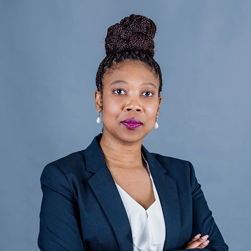
Phindiwe November
Human Resources Manager: Corporate
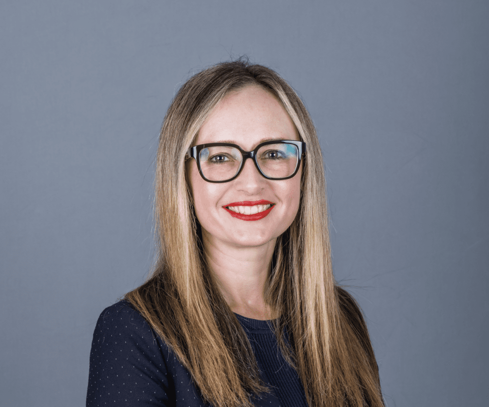
Liesel Roets
Head of Finance
Nobusi Singata
Company Secretary
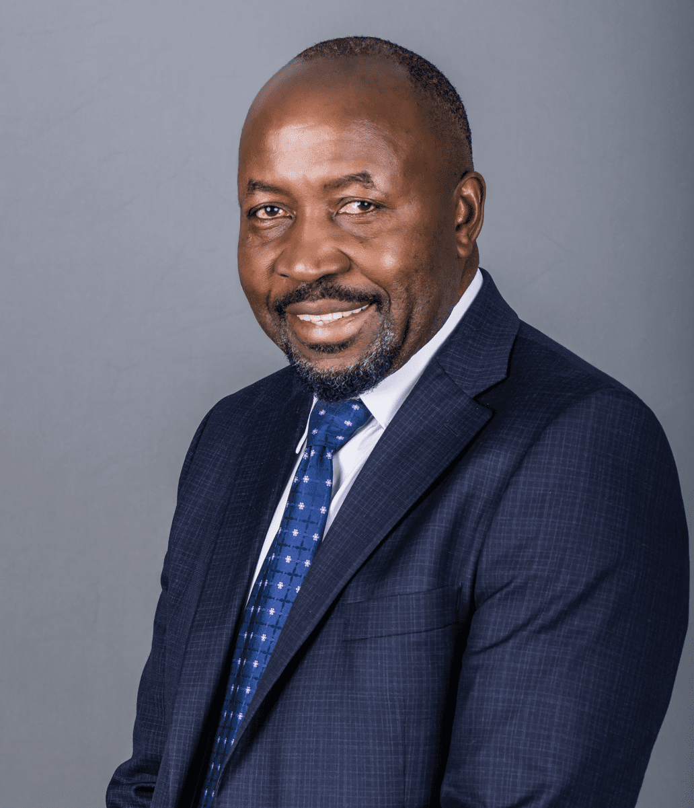
Richard Thongoana
Head of Marketing: Chrome
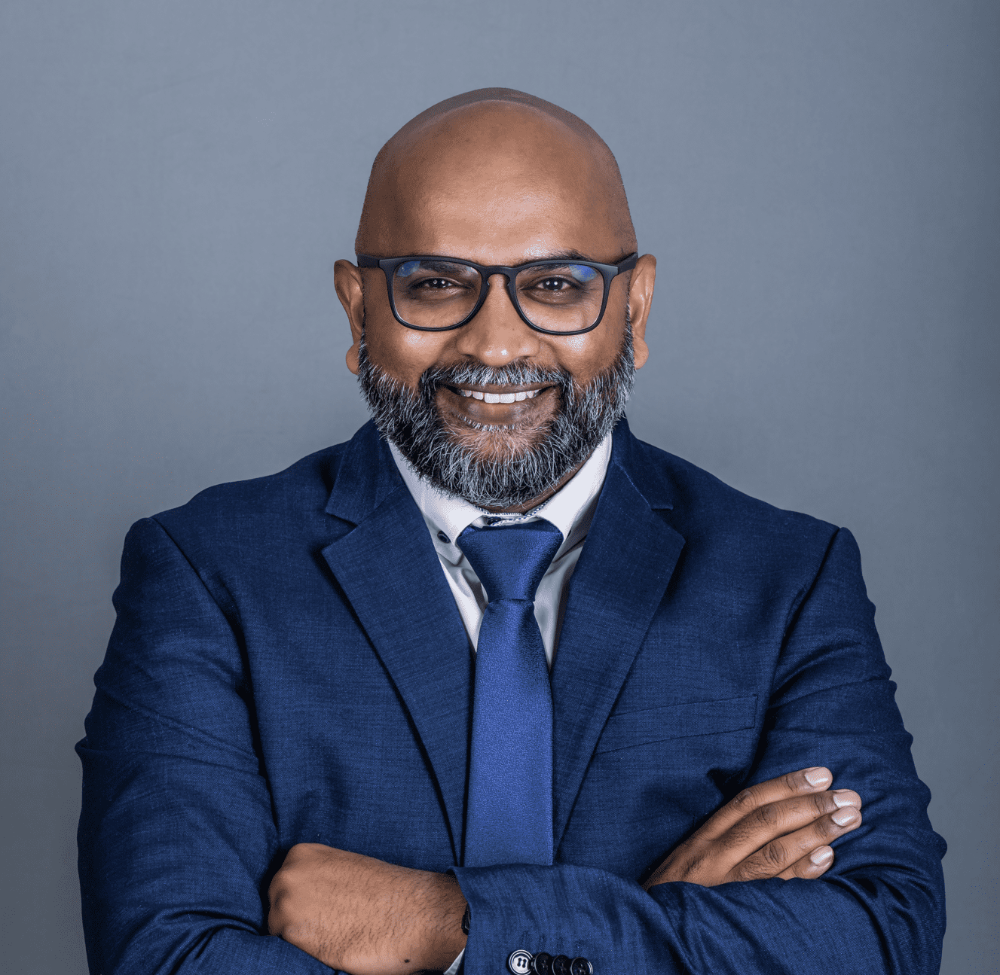
Loganathan Govender
Corporate Governance and Compliance Manager
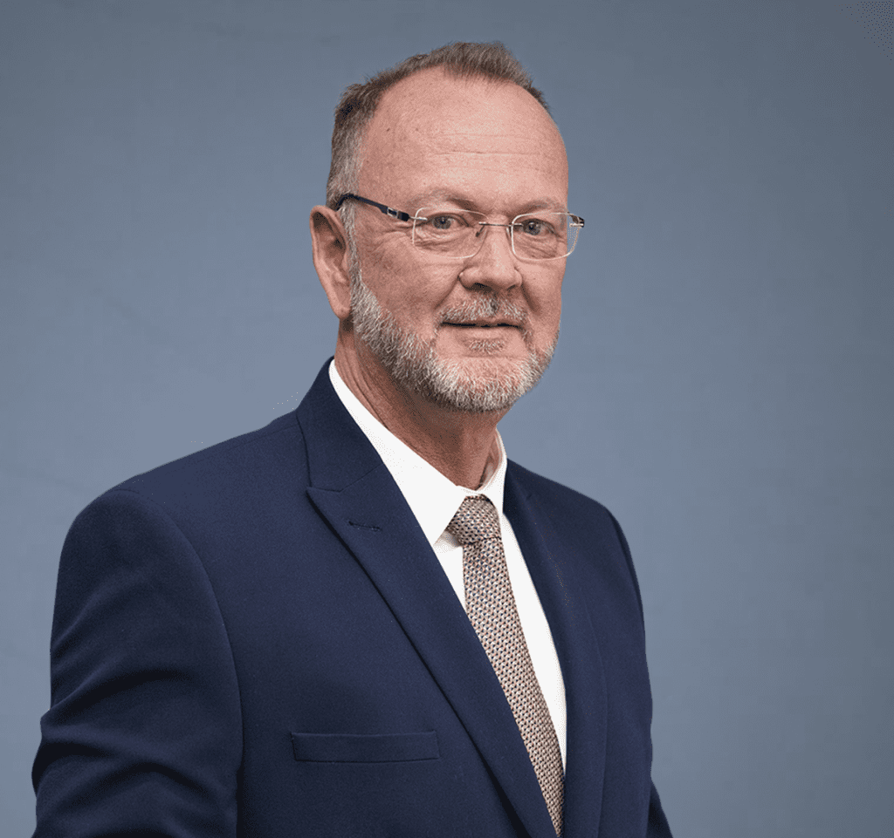
Dean Pelser
Chief Executive Officer: SBPM
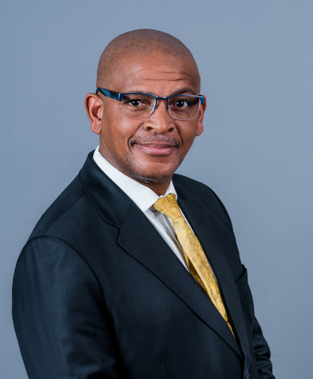
Hope Tyira
Group Executive: Corporate Affairs and ESG
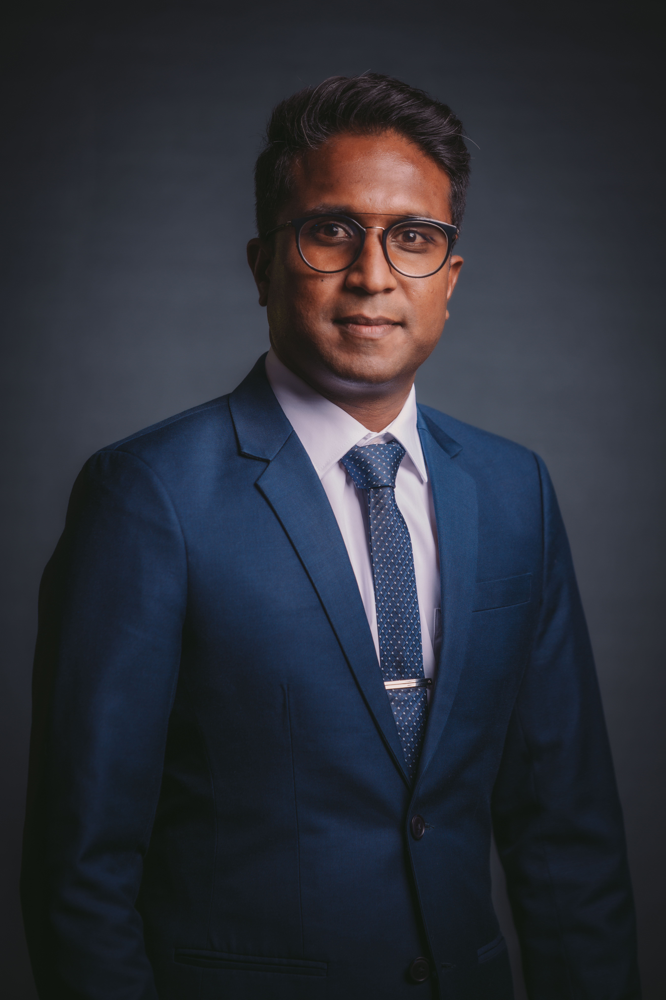
Priyan Padayichie
Head of Corporate Finance and M&A
Executive team and board
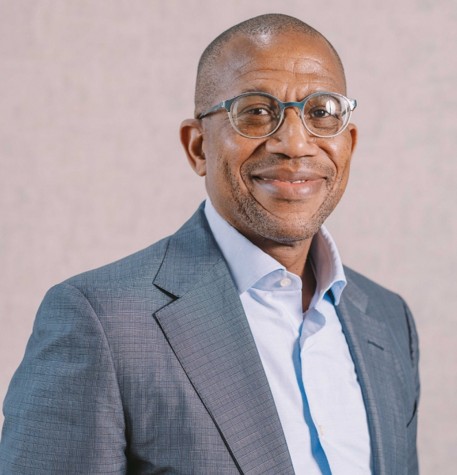
Lindani Mthwa
Chief Executive Officer
Profile
- 10 years in Anglo Gold, up to Sectional Manager level
- 6 years in Anglo Platinum up to Production Manager level
- Served briefly in the Minerals and Petroleum Resources Development Act Panel formed by the Minister
- Served as Co-Head of Entrepreneurial Team in the New Mining Fund
- Board member of the South African Chapter of African Renaissance
- Member of SAIMM, AMA, AMMSA
- One of the first two black individuals to receive a Mine Manager’s Certificate in South Africa’s gold industry in 1992
- HD Metalliferous Mining (Wits Technikon); Management Development Programme (Stellenbosch Business School); Senior Management Program (Henley, UK); MBA (De Montfort, UK)
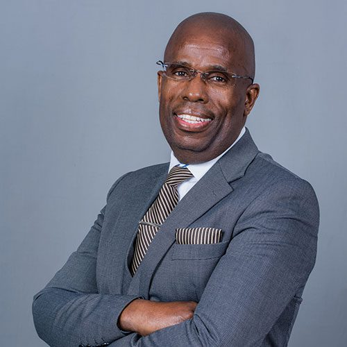
Xolile Mazabane
Executive: Business Development, Legal and Smelters
Profile
- Responsible for handling the most complex legal matters or projects for the Siyanda Group of companies
- Acts as counsel on issues involving company compliance with the most complex governmental and regulatory standards
- Oversees legal matters requiring external legal assistance
- Identification of new business ventures (locally and internationally)
- Worked for Old Mutual Plc as a legal advisor
- Practised as an attorney for his own account for 11 years in both corporate and mining law
- Associate Member of the Institute of Life and Pensions Advisers
- B Proc, LLB – Wits University
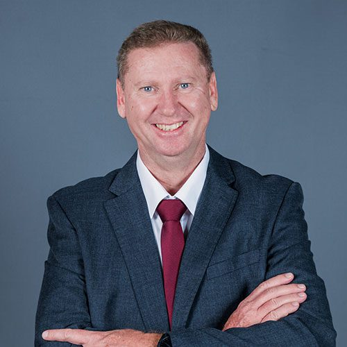
Hein Teessen
Finance Director
Profile
- Responsible for the financial function of Masa Chrome Company Proprietary Limited on behalf of Anglo Platinum (50.1% shareholder) and Siyanda Chrome Investments Proprietary Limited (49.9% shareholder)
- Represents Siyanda Resources Proprietary Limited on various boards as a director and trustee
- Responsible for preparing and presenting various budgets and management accounts for the Siyanda Group companies
- B Accounting – University of Potchefstroom; MBA – UNISA
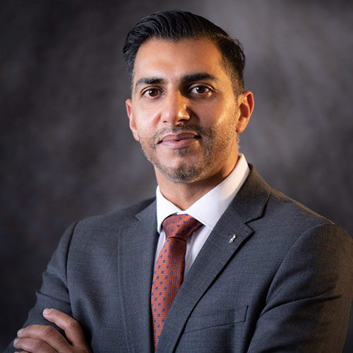
Imraan Osman
Director: Corporate Finance and Business Development
Profile
- Retaining the current Group portfolio of Corporate Finance and Business Development, he also fulfils the role of Chief Financial Officer at Siyanda Bakgatla Platinum Mine
- Participates at an Executive level to develop and execute an operational turnaround strategy and to lead company transitions
- 6 years in public practice – audit and accounting
- 13 years in mining across financial services, operational management, performance management, strategy and strategic financial planning
- Has served on numerous Audit committees for Provincial Government
- Vice Chairman on a Medical Scheme Board
- BCompt Honours, CTA, MBA
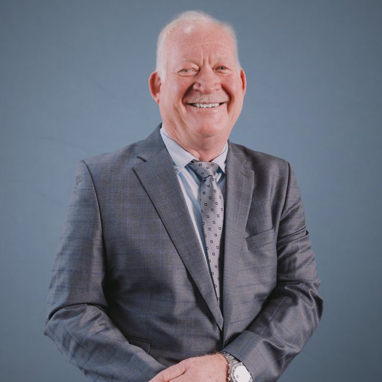
Piers du Plessis
Managing Director: Chrome & PGM’s
Profile
- Leads the strategic and operational planning technical function for the chrome business
- Directs engineering staff preparing plans, designs, cost estimates and specifications for experimental, maintenance or modernisation programmes
- 21 years with JCI / Anglo Platinum in operations
- 4 years with Anglo Platinum on process design projects
- Member of SAIMM, MMMA
- NHD Extraction Metallurgy – Wits Technikon; Management Development Programme – UNISA Business School
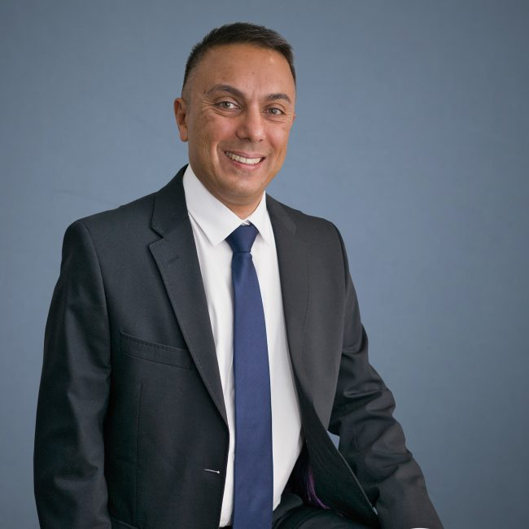
Ashraf Dada
Chairman of the Board
Profile
- Proficient at adding value and delivering results by initiating deals and leading multidisciplinary teams
- Highly skilled in advice on investment strategy, investment governance and M&A, with a focus on valuation, deal structuring, due diligence, communication, legal and project management
- Proven ability to build strong relationships with management, executives and directors
- Post Graduate Diploma in Accounting; PGDip in Management Accounting; B.Com Accounting (Auditing/Finance) – University of KwaZulu-Natal
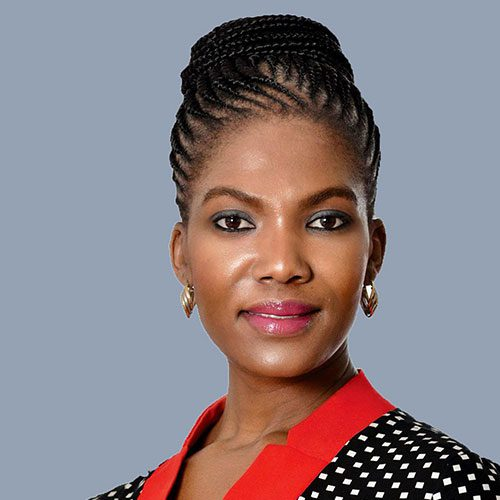
Dr Pulane Molokwane
Non-Executive Director
Profile
- Seasoned nuclear physicist and water and environmental engineering specialist with extensive corporate governance experience across the water, energy, waste, engineering and petroleum sectors
- Extensive experience within state-owned entities and advisory bodies
- Non-Executive Director: Eskom SOC Limited
- Non-Executive Director: Nuclear Energy Corporation of South Africa (NECSA)
- Non-Executive Director: South African Forestry Company SOC Limited (SAFCOL)
- Board Member: Inkomati Usuthu Catchment Management Agency (IUCMA)
- Board Member: Sedibeng Water Board, Bothaville, Free State
- Ph.D. Chemical Technology (Environmental Engineering – Water Utilisation), University of Pretoria; M.Sc. Applied Radiation Science & Technology, PGDip and B.Sc. Physics & Chemistry – University of North West
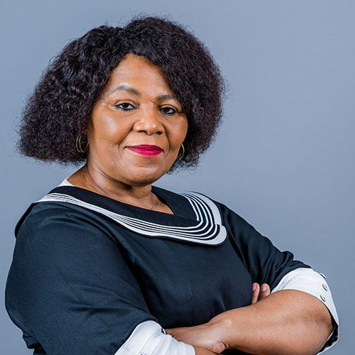
Thembi Tulwana
Non-Executive Director
Profile
- Seasoned corporate executive and director with a career spanning over 30 years at both board and executive levels
- Served as executive committee member and board member for Denel, Uthingo, Gidani and Gijima Technologies
- Partnership Investment: Board Member
- Uthingo and Gidani: Remco, Ethics & Social Responsibility, Audit & Risk
- FIKZA: Board Member & Remco
- Siyanda Resources: Board Member, Remco Chairperson, Audit & Risk
- Wescoal, Indalo Investments, Ubulali Investments: Board Member
- B.Com – Fort Hare University; B.Sc. Management – Liberty University (USA); MBA – De Montfort University (UK)
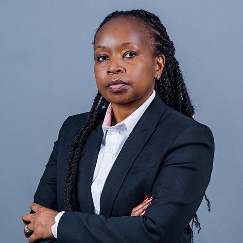
Lehotlo Ramokgopa
Non-Executive Director
Profile
- Over 22 years’ professional experience in mining, financial services and management consultancy (public sector, ICT, telecommunications, services)
- Director and Shareholder: Evolut Consulting (Pty) Ltd and Evolut Consulting GmbH
- Director, Co-Founder and Shareholder: One Africa Holdings; Erinite (Pty) Ltd
- Former Non-Executive Director: Bank of America Merrill Lynch (South Africa); HouseME (representing ESquared, owned by the Allan Gray Foundation)
- Former Board Member and Remco: Open Africa Foundation
- Former credit committee member: Masisizane Enterprise Development Fund
- Former mentor and business plan adjudicator: GIBS / Goldman Sachs 10,000 Women programme
- Member: International Women’s Forum South Africa
- Siyanda Resources: Board Member; member of Audit and Risk and Social, Ethics and Remuneration committees (representing the PIC)
- B.Sc. Computer Science and Geology – University of the Western Cape; MBA – De Montfort University (UK); Facilities Management certificate – UCT; Business Sustainability – Cambridge Institute of Sustainability Leadership (UK)
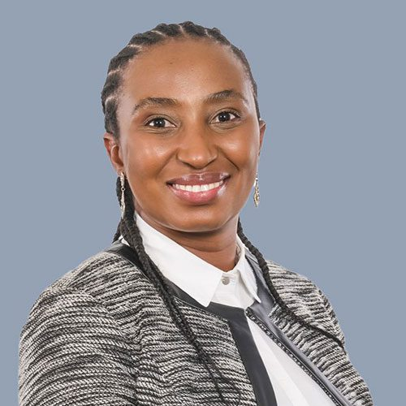
Malande Tonjeni
Non-Executive Director
Profile
- Chartered Accountant and seasoned executive, director and trustee across mining, manufacturing, retirement funds, construction, energy, financial services and health
- Experience spans business and financial management, strategy, corporate governance, operations management, and financial and integrated report writing
- Independent Audit Committee Member – Government Employees Medical Scheme (GEMS)
- Independent Non-Executive Director – 3Sixty Financial Services Group / NUMSA Investment Company
- Independent Trustee – ArcelorMittal SA
- Independent Non-Executive Director – Sechaba Medical Solutions
- BCom and BCom Honours (Accounting) – University of Port Elizabeth; CA(SA); Transition to General Management – INSEAD; Mining Tax PGDip – Wits; Banking PGDip – University of Johannesburg